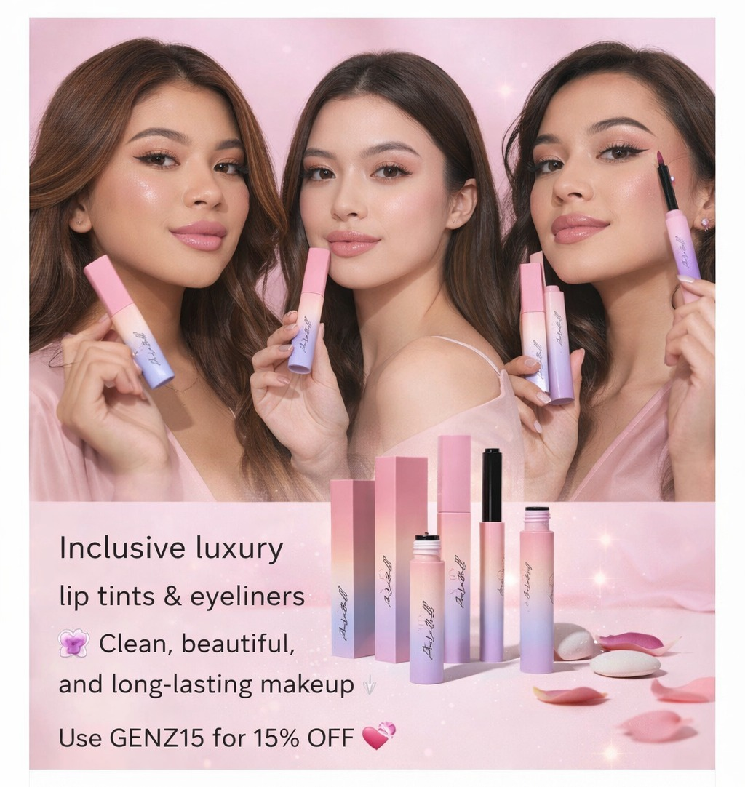

Glow Naturally: The Beauty of Effortless Makeup

In today’s fast-paced world, beauty is no longer about heavy layers of makeup. It is about enhancing what already makes you unique. At Aurabell, we believe that the most powerful beauty look is one that feels natural, comfortable, and confidently you.
Effortless makeup starts with products that work with your skin rather than covering it. A soft lip tint can add a fresh touch of color while keeping your look light and natural, and a precise eyeliner can instantly define your eyes without overwhelming your features.
Clean beauty also plays an important role in this approach. Choosing products that are paraben-free, cruelty-free, dermatologically tested, and vegan allows you to enjoy makeup that is both beautiful and responsible.
At Aurabell, our goal is simple: to create products that help you express your individuality while feeling confident in your own skin.
Because the most beautiful thing you can wear is your aura.